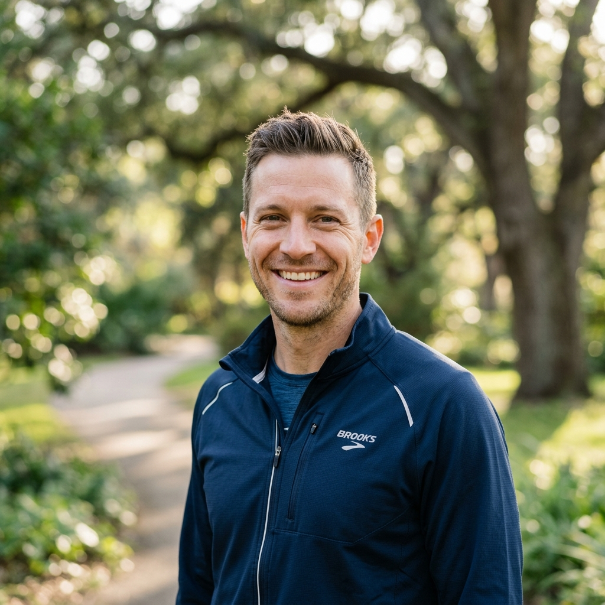
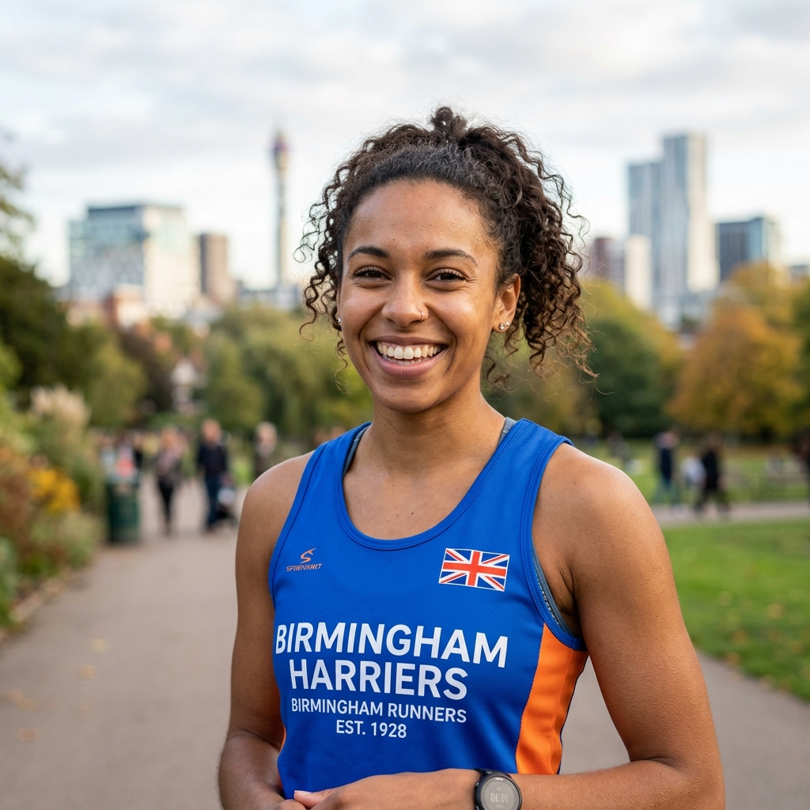

Certified Coaching & Dedicated Run Leadership
At Birmingham Swifts, safety, encouragement, and inclusive athletic development go hand in hand. Every weekly run is supported by certified volunteers who give their time freely so you can enjoy your running journey without stress or pressure:
England Athletics Qualified Coaches (3 Coaches): Our coaches hold certified England Athletics qualifications (Coach in Running Fitness / Coaching Assistant). They design progressive training cycles, coach safe running biomechanics, and provide tailored marathon and endurance guidance.
Volunteer Run Leaders (15 Leaders): Certified through England Athletics' Leadership in Running Fitness (LiRF) program. They plan and guide our official Thursday evening social routes along Birmingham's canal towpaths and city streets, lead Walk-to-Run groups, and act as dedicated tail walkers ensuring no runner is ever left behind. (Note: Saturday Parkruns and Sunday Long Runs are informal, member-led community meetups without designated leaders).
EA Qualified Coaches
Guiding your fitness with professional England Athletics accreditation, sports science principles, and genuine encouragement.
Sarah Jenkins
Sarah has been coaching with Swifts for over 7 years. A veteran of 18 marathons and numerous ultras, she creates our structured autumn and spring marathon training plans. She focuses on sustainable aerobic conditioning, race-day nutrition strategies, and keeping running joyful.

Alex Morgan
Alex leads our beginner development and Couch to 5k programs. With a background in sports physiotherapy, Alex specializes in safe biomechanics, gradual impact progression, and helping nervous first-timers discover that they belong in the running world.

Jordan Patel
Jordan oversees our seasonal track speed sessions and tempo workouts. He works closely with runners aiming for 5k, 10k, and half marathon personal bests, integrating cadence drills, stride mechanics, and tactical pacing into accessible, high-energy sessions.
Volunteer Run Leaders (15 Active Leaders)
Our friendly, trained LiRF leaders who guide our official Thursday social runs, routes, and Walk-to-Run groups.
James Cooper
LiRF CertifiedCo-leads our main Thursday canal routes. Loves sharing Birmingham history while keeping the group together and enthusiastic.
📍 Fav Route: Birmingham & Fazeley Canal
Hannah Wright
LiRF CertifiedPassionate Walk-to-Run mentor. Specializes in gentle interval timings and making brand-new joiners feel completely at home.
📍 Fav Route: Edgbaston Reservoir Loop
Tom Fletcher
LiRF CertifiedThursday Social Route Leader & Parkrun Enthusiast. Guides canal towpath groups on Thursdays and loves catching up with members over coffee.
📍 Fav Route: Cannon Hill Park 5k
Rachel Davies
LiRF CertifiedThursday Social Run Leader & Trail Running Advocate. Leads steady Thursday groups through Birmingham and shares route ideas for weekend trails.
📍 Fav Route: Sutton Park Woods & Lakes
Luke Adams
LiRF CertifiedRegular Thursday 7k leader. Renowned for his upbeat playlists, safety debriefs, and hosting lively tables at The Fox afterwards.
📍 Fav Route: Worcester & Birmingham Canal
Priya Sharma
LiRF CertifiedOur champion tail walker. Dedicated to ensuring that whoever runs, jogs, or walks with Swifts always has cheerful company.
📍 Fav Route: Bath Row & Gay Village Circuit
Chris O'Connor
LiRF CertifiedNight running & street safety coordinator. Keeps runners illuminated with high-vis gear checks and clear road crossings.
📍 Fav Route: City Centre Architectural Loop
Emily Watson
LiRF CertifiedCouch to 5k co-leader. Brings positive encouragement, dynamic warm-up drills, and celebratory cheers to each beginner cohort.
📍 Fav Route: Harborne Walkway
Daniel Miller
LiRF CertifiedEndurance pacer and route mapper. Helps Swifts members smoothly step up from 5k to 10k and beyond with even pacing.
📍 Fav Route: Bournville & Selly Oak Trails
Zoe Bennett
LiRF CertifiedThursday Social Run Leader & Welcome Buddy. Helps guide Thursday canal routes and makes every newcomer feel instantly welcomed.
📍 Fav Route: Perry Hall Parkrun
Aaron Patel
LiRF CertifiedFirst aid certified leader. Known for his friendly smile, careful route risk assessments, and steady canal towpath pacing.
📍 Fav Route: Gas Street Basin to University
Sophie Hall
LiRF CertifiedWalk-to-Run leader and member welcome buddy. Always on hand to pair up with nervous first-timers on Thursday evenings.
📍 Fav Route: Sunset Park & Gay Village Green
Kieran Murphy
LiRF CertifiedTempo and 10k route leader. Proudly represents Swifts at regional 10k road races and champions LGBTQ+ visibility in athletics.
📍 Fav Route: Lickey Hills Country Park
Natalie Price
LiRF CertifiedTail runner extraordinaire! Guarantees high-fives, motivational chats, and ensures our regather stops are smooth and fun.
📍 Fav Route: Woodgate Valley Country Park
Ben Harrison
LiRF CertifiedThursday Evening Route Leader & Marathon Runner. Guides Thursday distance groups and shares endurance pacing and fueling tips.
📍 Fav Route: Grand Union Canal Network
Run With Our Team This Thursday!
Whether you want to start walking and jogging or train for your next marathon, our coaches and run leaders are here to support you.